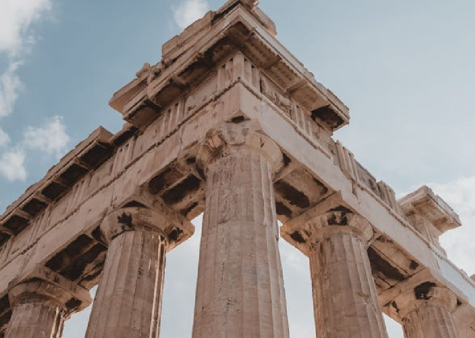

Partenon

- O retângulo de ouro aparece no Partenon e em série de construções da Grécia antiga.
O Partenon continua sendo um exemplo icônico
de como os princípios estéticos podem ser aplicados
na arquitetura para criar uma sensação de equilíbrio
e beleza duradoura.